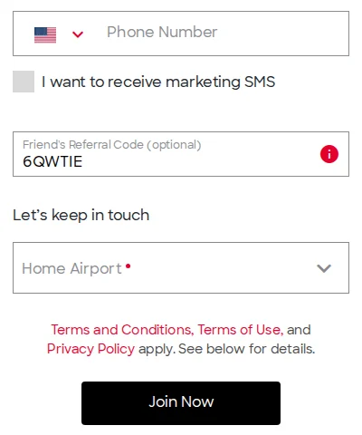
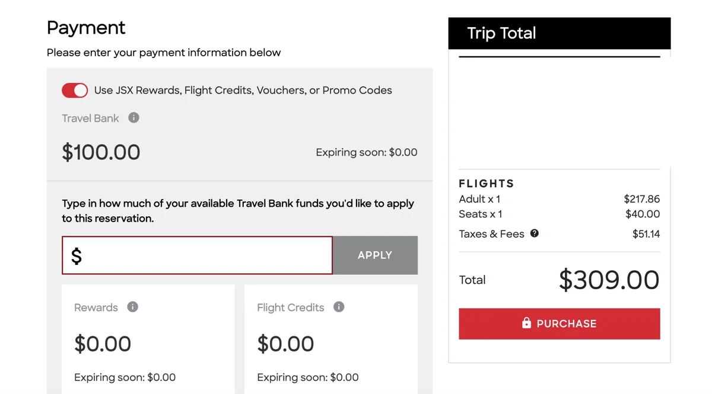

JSX Flights for United Cards: Up to $300 Off
Sampled JSX fares for one adult. Use the tool to spot cheap routes and dates, then price your exact trip on JSX.
Explore the US route map ↓Use your United card to save on JSX
Annual card benefitEligible United cards offer up to $100–$200 back on direct JSX purchases each cardmember anniversary year. New JSX members can also get a $100 referral credit: up to $200–$300 in combined savings, depending on your card and available credit.
1Check your United card’s JSX credit
Check your card’s benefits and how much JSX credit you have left this anniversary year. The eligible cards below automatically credit qualifying purchases made directly with JSX; no Chase Offer activation is required.
| United card | Annual JSX credit | With $100 referral* |
|---|---|---|
| United Explorer | Up to $100 | Up to $200 |
| United Business | Up to $100 | Up to $200 |
| United Quest | Up to $150 | Up to $250 |
| United Club | Up to $200 | Up to $300 |
| United Club Business | Up to $200 | Up to $300 |
*Combined savings assume an eligible new-member referral, enough qualifying spending, and the full annual card credit remaining. Existing JSX members can still use their eligible card’s remaining annual benefit. Other United cards may not include a JSX credit.
These are statement credits after purchase, not United TravelBank cash or a discount shown at checkout. Your anniversary year follows your card account’s billing cycle, not the calendar year. Allow 6–8 weeks for credits to post; a transaction posting after your benefit year ends can use next year’s allowance. Your account must be open and not in default. Follow the card links above for issuer terms, or learn about United and JSX.
2Create your JSX account with a referral
Before you make a JSX account, sign up through a referral link. The code fills in for you. Eligible new members can get $100 toward their first JSX flight. I may earn $100 too; check the referral terms and voucher restrictions when you sign up.
Get $100 flight credit
3Pick a cheap route and date
Use the sampled fares below to find a cheap route, then check the live price on JSX. Fares change with the departure time and extras. The table shows fares before any referral voucher or card statement credit.
Browse fares ↓4Book directly with JSX and pay with your United card
Apply an eligible referral voucher at JSX checkout, then pay the remaining balance with your eligible United card. Your card’s statement credit can cover qualifying charges up to your remaining annual allowance. Book directly with JSX to qualify.
Example: a $250 fare minus a $100 referral voucher leaves $150 charged to your card. With the full annual benefit available, Explorer or Business could credit $100, leaving $50 out of pocket; Quest, Club or Club Business could cover the $150 charge. Savings never exceed the eligible fare and amount paid.

Pay directly with your eligible United card. Your statement credit is limited to the qualifying amount charged and your remaining annual JSX benefit.
| Route | Trip | View |
|---|
Try another airport, a wider date range, or a higher budget.
Map of these fares
Same fares, same filters. Choose a route here or in the table to narrow both views.
No routes match these filters. Try a different airport, date range, or budget.
Colored routes match the fares above; gray routes have no matching fare. Select an airport to set From, or a route to set From and To.
About these fares & the route map
Fares shoppers saw on JSX as of , for one adult before seats or extras. These are samples, not quotes: prices change with departure time, availability, and add-ons. Round-trip prices cover both flights. Confirm your exact fare on JSX before booking.
Saved snapshot; fares do not refresh automatically. Past departure dates are hidden.
Catalog pairings may be seasonal or unavailable—confirm schedules on JSX. NYC is a metro-area code. Airport locations are approximate, and lines show connections rather than actual flight paths.